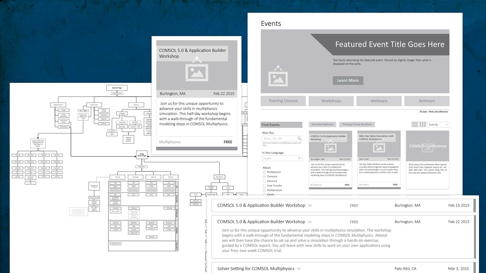
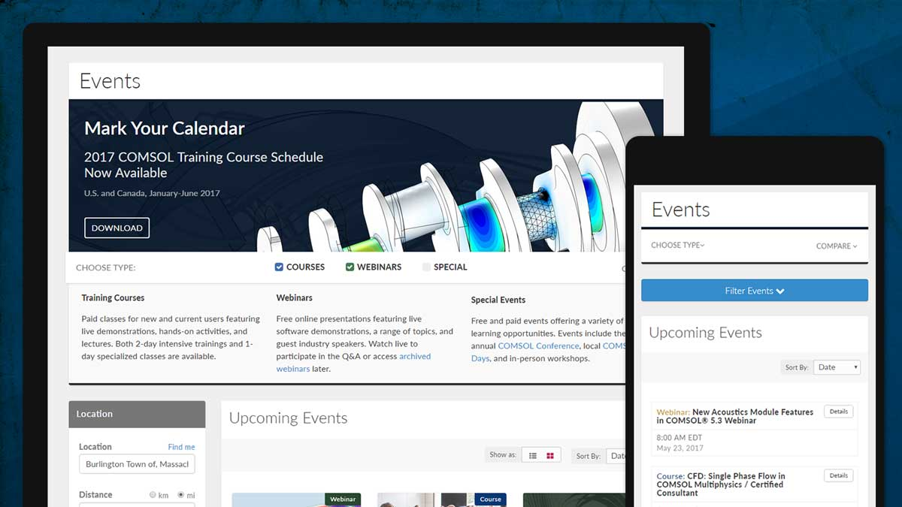

Events Calendar
In early 2015, the events section of comsol.com was not up to the tasks that our customers and internal stakeholders were asking of it. It was a hard-to-read, text-heavy legacy system that didn't provide the robust filtering options potential attendees needed to find the right training events for their needs, and it was tied into a legacy backend that made the landing pages for individual events a chore to create and update.
I was tasked with one half of a two-part project to rebuild and modernize the system. My part consisted of a ground-up redesign of the customer-facing calendar at comsol.com/events, as well as the landing pages for each individual event listed in the calendar. Simultaneously, another team was rebuilding the custom content management system that would feed event data to my calendar and landing pages.
Role
- Project Management
- Information Architecture
- Wireframing
- UI/UX Design
- HTML/CSS
- jQuery
- Development Specification
- QA Testing
- Post-Launch Support
The Process

This was a project that had been (just barely) started and shelved in favor of more pressing matters (we're a small team with a big website) shortly before I started with the company, so the overall spec as far as features and goals go was pretty well fleshed-out when I began working. The research phase was more or less done and I was able to jump right to the information architecture once I was brought up to speed.
As with many other things in my life (I run my life with lists and spreadsheets), I started with a big ugly list of every page, content block, and interactive element in the system and whittled away at it until I had the rather sprawling flowchart you can see a bit of in the screenshot above. This chart details the two pages in the system - the calendar and the single event page - and all of the content, interactive elements, and links between each of them.
From here, I moved on to wireframing (samples of which are also in the image at the top of this section) and, after many revisions and review meetings, started fleshing out the static HTML & CSS.

On the backend, the events system would be using a combination of php and javascript to tie into the database and generate individual event pages as they were created by events coordinators in the new CMS being built to power this thing. To facilitate this, I created a static prototype of all pages (the calendar itself, and one for each of the four event types) which was - after many rounds of review, testing, and revisions - handed off to the backend developer to pick apart and put back together again in a manner that would make the CMS happy.
The end result has been in use since late 2015, and while I can't share internal registration numbers, the new design has been overall well-received and more than accomplished our stated goals of better filtering, clean, modern design, and simplified registration.
View Live
Addendum
While I did not work on the companion CMS back in 2015, I did give it's UI an overhaul in late 2016. As mentioned above, we are a very small team working on a rather large website, and the original CMS was created mainly by backend developers and didn't get much attention on the UI side of things; So while it was functional, certain crucial aspects of it suffered from poor typography and lack of hierarchy.
To help with this, I re-worked the main event listing in the CMS (a table with many, many columns for each event) to improve spacing, typography, and general organization of data. I also added the ability to hide/show and filter out various data columns depending on a given users needs - for example, an event coordinator has different data needs day-to-day than the VP of Marketing, so they can customize which columns they see by default.